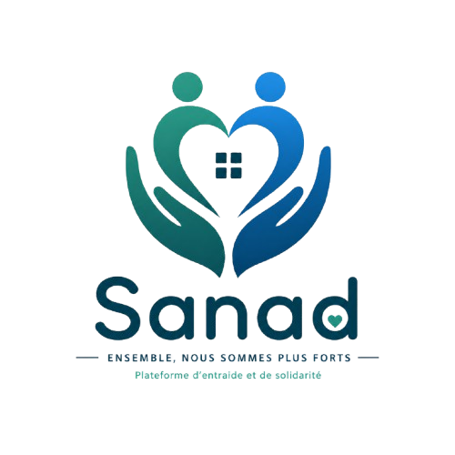

Expression du besoin
Demandes d’aide, catégories, urgence, localisation et détails.

SANAD est une plateforme web solidaire pensée pour structurer la demande d’aide, la contribution des donateurs et le travail des associations dans un même espace numérique.
| Abréviation | Signification |
|---|---|
| API | Interface permettant au frontend d’échanger des données avec le backend. |
| JWT | Jeton d’authentification utilisé pour contrôler les accès. |
| PWA | Progressive Web App, évolution possible vers une application web installable. |
| Scrum | Méthode agile de travail par itérations courtes. |
Les actions de solidarité reposent souvent sur la rapidité de diffusion de l’information, la confiance entre les acteurs et la capacité à suivre les contributions. Pourtant, les demandes d’aide circulent fréquemment dans des canaux dispersés : publications sur les réseaux sociaux, messages privés, appels ponctuels d’associations ou collectes peu structurées. Cette dispersion rend le tri des demandes, la vérification des informations et le suivi des dons plus difficiles.
Le projet SANAD répond à ce besoin en proposant une plateforme web centralisée d’entraide. Elle met en relation les personnes qui publient une demande, les associations qui portent des campagnes et les donateurs qui souhaitent contribuer de manière financière, matérielle ou par un service.
SANAD est une application web sociale orientée vers la solidarité. Elle couvre la consultation publique de demandes d’aide, l’inscription et la connexion des membres, la publication de demandes, la gestion de campagnes associatives, le suivi des dons et l’administration des contenus sensibles. Les demandes et les campagnes peuvent être classées par catégories telles que la santé, l’éducation, l’alimentation, le logement, l’emploi ou l’infrastructure.
Le projet distingue clairement les rôles afin que chaque acteur dispose d’un parcours adapté :
Il explore les demandes, publie ses propres besoins, effectue des dons, propose une aide, suit ses favoris, ses notifications et son historique.
Elle présente son profil, crée des campagnes, consulte les contributions reçues et suit les demandes ou offres liées à son activité.
Il supervise les associations, les utilisateurs, les demandes, les dons et les statistiques globales de la plateforme.
Il découvre les demandes, les associations et les informations publiques avant de créer un compte pour agir.
Une action solidaire efficace suppose que le besoin soit clairement exprimé, que l’aide arrive au bon destinataire et que les contributeurs aient confiance dans le processus. Or, lorsqu’une demande est noyée dans un flux de messages ou lorsqu’une collecte ne donne pas de visibilité sur sa progression, plusieurs risques apparaissent : duplication des efforts, perte d’information, incertitude sur la légitimité de l’appel et découragement des donateurs.
Les pratiques existantes s’appuient généralement sur quatre familles de solutions. Les réseaux sociaux diffusent rapidement les besoins, les groupes de discussion facilitent l’échange local, les sites d’associations décrivent les actions de leurs structures, et les plateformes de collecte offrent un parcours de paiement ou de contribution.
| Solution observée | Apport | Limite pour le besoin SANAD |
|---|---|---|
| Réseaux sociaux | Visibilité rapide et partage simple. | Demandes dispersées, vérification et suivi limités. |
| Sites associatifs | Présentation institutionnelle et mise en confiance. | Peu de centralisation entre plusieurs associations et demandeurs. |
| Plateformes de collecte | Objectifs financiers et suivi des montants. | Aide matérielle, services et espaces métiers parfois absents. |
| Échanges directs | Relation humaine immédiate. | Traçabilité faible et gestion difficile à grande échelle. |
L’étude montre qu’une solution isolée couvre rarement tout le cycle de solidarité. Les contenus peuvent manquer de classement, les campagnes ne sont pas toujours reliées à des profils associatifs identifiables et les rôles ne sont pas clairement séparés. Un donateur peut alors hésiter à participer, tandis qu’une association doit multiplier les outils pour gérer sa présence et ses actions.
SANAD regroupe les principaux besoins dans une seule application. L’exploration publique permet de découvrir les demandes et associations. Les espaces authentifiés permettent ensuite de publier, contribuer, suivre et administrer. Cette organisation améliore la lisibilité du parcours tout en gardant une base technique évolutive.
Demandes d’aide, catégories, urgence, localisation et détails.
Dons, campagnes associatives, objets, services et favoris.
Notifications, tableaux de bord, statistiques et administration.
Le projet contient plusieurs blocs fonctionnels interdépendants : authentification, exploration, publication de demandes, dons, campagnes, tableaux de bord et administration. Une réalisation linéaire aurait rendu les retours tardifs. Le choix de Scrum a permis de livrer progressivement des ensembles cohérents, de vérifier les parcours majeurs puis d’ajuster les priorités.
Cette approche est adaptée au travail en binôme : chaque sprint peut être découpé en tâches frontend, backend, base de données, intégration et tests. Elle donne aussi une visibilité claire sur les écarts entre l’estimation théorique et le temps réellement nécessaire.
| Élément Scrum | Application dans le projet |
|---|---|
| Product Backlog | Liste des fonctionnalités : comptes, demandes, dons, campagnes, administration. |
| Sprint Planning | Sélection des User Stories à réaliser pour l’itération. |
| Sprint | Développement d’un ensemble testable de fonctionnalités. |
| Sprint Review | Vérification de l’interface, des parcours et des retours obtenus. |
| Rétrospective | Analyse de l’organisation, des difficultés et des améliorations. |
Le travail a été organisé autour d’un découpage par fonctionnalités. Les composants Angular ont été reliés à des endpoints PHP dédiés et à une base MySQL structurée. Les versions successives ont été suivies avec Git et GitHub, ce qui permet de conserver l’historique des évolutions et de collaborer sur une base commune.
Le frontend repose sur Angular. Ce framework structure l’application en composants, routes, services et formulaires. Il facilite la séparation des responsabilités et permet de construire des espaces différents pour l’utilisateur, l’association et l’administration.
Le backend s’appuie sur des scripts PHP organisés sous forme d’API. Chaque endpoint traite un besoin précis : connexion, inscription, récupération des demandes, création d’un don, gestion des campagnes ou lecture des statistiques.
| Langage | Rôle dans SANAD |
|---|---|
| TypeScript | Logique des composants Angular, services et guards. |
| HTML / CSS | Structure des vues, formulaires, tableaux de bord et responsive design. |
| PHP | Endpoints backend, authentification et traitement des données. |
| SQL | Schéma MySQL, relations, migrations et données de test. |
Une Progressive Web App permet à une application web de se rapprocher d’une application installable sur mobile ou bureau. L’architecture Angular de SANAD prépare cette évolution, mais la version actuelle reste principalement une application web. Une évolution PWA complète pourra intégrer un manifeste, un service worker, une stratégie de cache et des tests hors ligne.
Les estimations ci-dessous présentent un suivi cohérent des itérations du projet. Elles peuvent être adaptées si le journal de sprint du binôme contient des durées plus précises.
| User Story | Estimation théorique | Réalisation |
|---|---|---|
| Créer l’application Angular et organiser les routes principales. | 4 h | 4 h |
| Permettre l’inscription d’un utilisateur ou d’une association. | 6 h | 7 h |
| Permettre la connexion sécurisée et le stockage du jeton. | 6 h | 7 h |
| Protéger les écrans selon les rôles et statuts. | 5 h | 6 h |
| User Story | Estimation théorique | Réalisation |
|---|---|---|
| Consulter les demandes d’aide et les filtrer. | 6 h | 7 h |
| Afficher le détail d’une demande avec sa progression. | 6 h | 8 h |
| Publier une demande depuis l’espace utilisateur. | 5 h | 6 h |
| Relier les vues Angular aux endpoints des demandes et catégories. | 5 h | 6 h |
| User Story | Estimation théorique | Réalisation |
|---|---|---|
| Faire un don pour une demande ou une association. | 7 h | 9 h |
| Consulter l’historique des dons personnels. | 4 h | 5 h |
| Gérer favoris, notifications et activité utilisateur. | 5 h | 6 h |
| Proposer une aide matérielle ou un service. | 5 h | 6 h |
| User Story | Estimation théorique | Réalisation |
|---|---|---|
| Créer et mettre à jour des campagnes associatives. | 7 h | 8 h |
| Consulter les dons reçus et le tableau de bord association. | 6 h | 7 h |
| Gérer associations, utilisateurs, demandes et dons côté admin. | 8 h | 9 h |
| Afficher les statistiques globales. | 4 h | 5 h |
Les écarts de temps les plus visibles proviennent de l’intégration entre interface et backend, des contrôles de rôle et de la richesse des parcours de dons. Le découpage par itération a néanmoins permis de garder une version testable après chaque bloc fonctionnel.
La plateforme a été vérifiée par des tests fonctionnels de parcours, des tests des API et des vérifications sur la base de données. Le projet contient aussi des fichiers de test Angular pour les écrans d’authentification ainsi que des scripts PHP de diagnostic et de test de connexion.
| Famille de test | Exemples vérifiés | Résultat attendu |
|---|---|---|
| Authentification | Inscription, connexion, mauvais mot de passe, redirection. | Accès correct et refus des données invalides. |
| Rôles | Routes utilisateur, association et administration. | Chaque rôle accède uniquement à son espace. |
| Demandes | Liste, filtres, détail, publication, favoris. | Données affichées et actions cohérentes. |
| Dons | Création, historique, dons anonymes, progression. | Contribution enregistrée et suivi lisible. |
| Associations | Profil, campagnes, dons reçus, demandes suivies. | Gestion métier accessible à l’association. |
| Base de données | Tables, relations, données seed et endpoints PHP. | Schéma exploitable et API alimentées. |
La version actuelle prépare une plateforme opérationnelle, mais certains compléments restent souhaitables pour une exploitation large : intégration d’une passerelle de paiement réelle, envoi d’e-mails de confirmation, renforcement des tests automatisés et déploiement sécurisé sur un environnement public.
Ce projet a permis de passer d’un besoin métier à une application complète. Nous avons appris à faire dialoguer des composants Angular avec un backend PHP, à concevoir une base relationnelle, à protéger des parcours sensibles et à structurer un produit qui comporte plusieurs types d’utilisateurs.
SANAD possède une portée fonctionnelle riche : elle ne se limite pas à une page de don, mais couvre également la demande d’aide, la campagne associative, le suivi personnel et l’administration. La séparation frontend/backend rend le projet plus lisible et facilite les évolutions futures.
Les tâches d’intégration ont demandé plus de temps que prévu. Pour un prochain projet, il serait utile de définir plus tôt les contrats d’API, de préparer un jeu de données stabilisé, d’élargir les tests automatisés et de réserver une phase dédiée à la qualité de la documentation finale.
Le travail en binôme apporte de la complémentarité : l’un peut progresser sur l’interface tandis que l’autre stabilise les API ou la base de données. Pour améliorer cette collaboration, il faut conserver des points de synchronisation courts, définir clairement les responsabilités de sprint et intégrer les branches de travail avant que les écarts ne deviennent coûteux.
| Priorité | Évolution proposée |
|---|---|
| Court terme | Compléter les tests automatisés et renforcer les messages de suivi. |
| Moyen terme | Ajouter paiement, reçus, e-mails et version PWA complète. |
| Long terme | Déployer la plateforme, analyser l’impact et enrichir les statistiques. |
Le module a permis d’appliquer les notions de développement web et de gestion de projet à un cas concret. Il a mis en évidence que la réussite d’une application ne dépend pas uniquement du code : l’analyse initiale, la planification, les tests, la documentation et la communication entre membres de l’équipe sont tout aussi importants.
L’expérience montre qu’un projet complet exige de relier les compétences techniques et méthodologiques. Le module a donc renforcé notre capacité à concevoir, développer, vérifier et présenter une solution numérique cohérente.
SANAD propose une réponse numérique à un besoin de solidarité organisé. La plateforme rassemble des demandes d’aide, des campagnes associatives, des dons, des aides non financières et des espaces de suivi adaptés aux différents rôles. Son architecture Angular, PHP et MySQL fournit une base solide pour évoluer vers un service plus complet.
Au-delà de la réalisation technique, le projet illustre l’importance de la confiance, de la clarté de l’information et du suivi dans les services solidaires. Les améliorations futures pourront renforcer la mise en production, l’automatisation des tests, les paiements et l’expérience mobile.
Dépôt du projet : https://github.com/Maram3105/SANAD_PLATFORM
Composants, routes, formulaires, services HTTP et guards.
API JSON pour authentification, demandes, dons et tableaux de bord.
Utilisateurs, associations, catégories, demandes, campagnes et donations.
| Espace | Fonctionnalités principales |
|---|---|
| Public | Accueil, exploration des demandes, associations et détails. |
| Utilisateur | Profil, publication, dons, favoris, notifications et activité. |
| Association | Tableau de bord, campagnes, profil, demandes et donations reçues. |
| Administration | Statistiques, utilisateurs, associations, demandes et dons. |
README.md : présentation rapide de l’application.DONATION_SYSTEM.md : documentation du système de dons.backend/schema.sql : structure de la base de données.backend/TESTING_GUIDE.md : guide de vérification des données et API.src/app/app.routes.ts : routes des espaces publics et protégés.